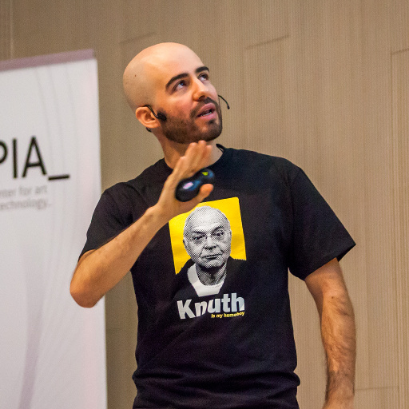

¿Qué tienen que ver las 'Vidas paralelas' de Plutarco y Python? ¿Qué podemos aprender de un tipo griego de hace 20 siglos? En esta keynote hablaré de historia de la literatura, de diversidad, de la Constitución, de un nuevo PEP y de por qué Python, y por extensión su comunidad, pueden ser un motor de cambio social muy potente.
Yamila Moreno se licenció en Teoría de la Literatura y Literatura Comparada. Un día, cayó en sus manos un Knoppix y poco después estaba programando. Fue cuestión de tiempo que se empezara a involucrar con Python y con el Open Source, como afición y como profesión.
En los últimos 5 años, ha co-fundado Kaleidos y ha sido un miembro muy activo de la comunidad Open Source: ha co-fundado la Asociación Python España, fundó PyLadies España, y ha organizado conferencias internacional así como talleres locales dirigidos a grupos infrarrepresentados. En su tiempo libre entrena a su drone para, algún día, dominar el mundo.

¡Python es genial! Lo escuchamos una y otra vez en cada PyCon, pero ¿por qué es tan increíble Python? A menudo se oyen argumentos como que "hay librerías para todo" o "las listas por comprensión", pero nada de esto es específico de Python y podría aplicarse a muchos otros lenguajes de programación. En esta charla planteo que, en el fondo y como propugnaba Edsger W.Dijkstra, todo se reduce a una cuestión de elegancia y sencillez. Y, como demostración, vamos a ver una implementación del algoritmo de Dijkstra: comenzando con el críptico código que suele encontrarse por Internet y mejorándolo poco a poco, haciéndolo más Pythónico a cada paso hasta reducir el algoritmo a su más pura esencia. ¡Eso de encontrar el camino más corto en un grafo suena difícil, pero desde 1956 no lo es!
Trabajo como ingeniero de software en Google. Llevo años embarcado en una inmisericorde cruzada contra el código poco legible, los algoritmos gratuitamente complejos y los ponentes aburridos — no necesariamente en ese orden. Hay quien asegura haberme escuchado afirmar "entre un código elegante que no funcione y uno feo que funcione, ¡prefiero el elegante!".